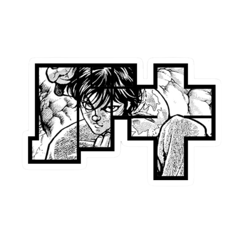
Baki Hanma
Baki Hanma, o protagonista de "Baki", é um lutador feroz e determinado que busca constantemente superar seus limites nas artes marciais. Criado desde jovem por seu pai, Yujiro Hanma, uma figura lendária conhecida como o "Grappler mais forte", Baki enfrenta desafios intensos para se tornar o guerreiro mais forte do mundo. Sua jornada é repleta de batalhas épicas contra outros mestres de artes marciais, incluindo seu pai. Além de suas habilidades físicas excepcionais, Baki também desenvolve uma profunda compreensão das nuances psicológicas das batalhas, tornando-se uma presença formidável e intrigante no cenário das artes marciais.

 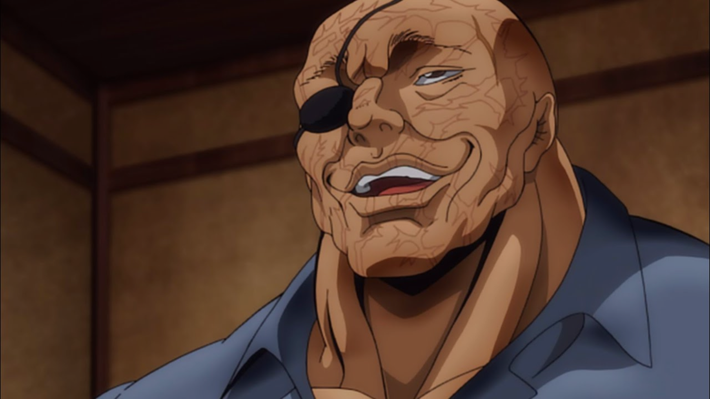
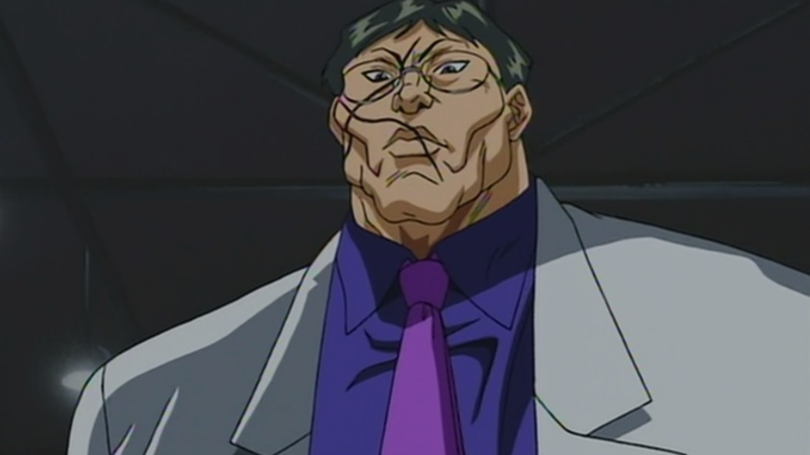
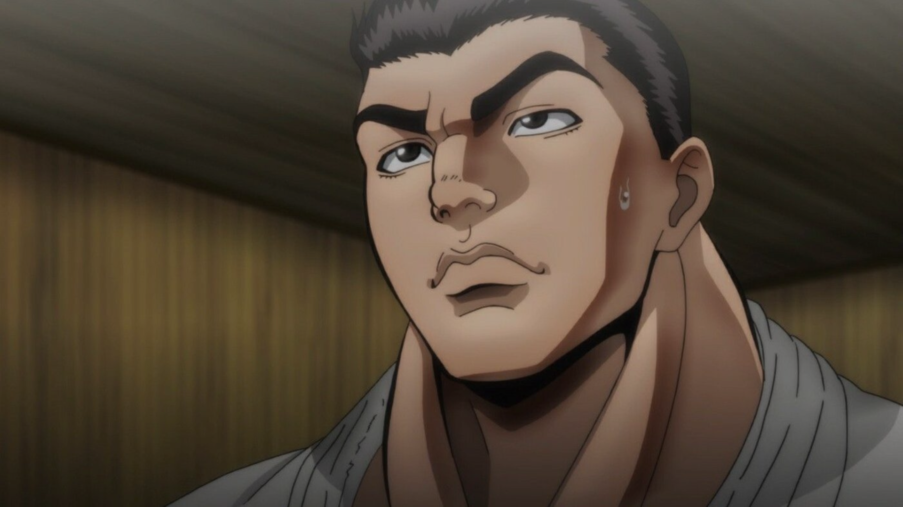
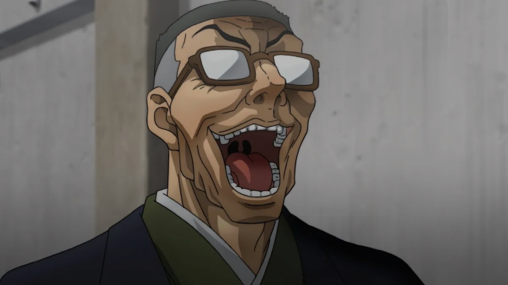
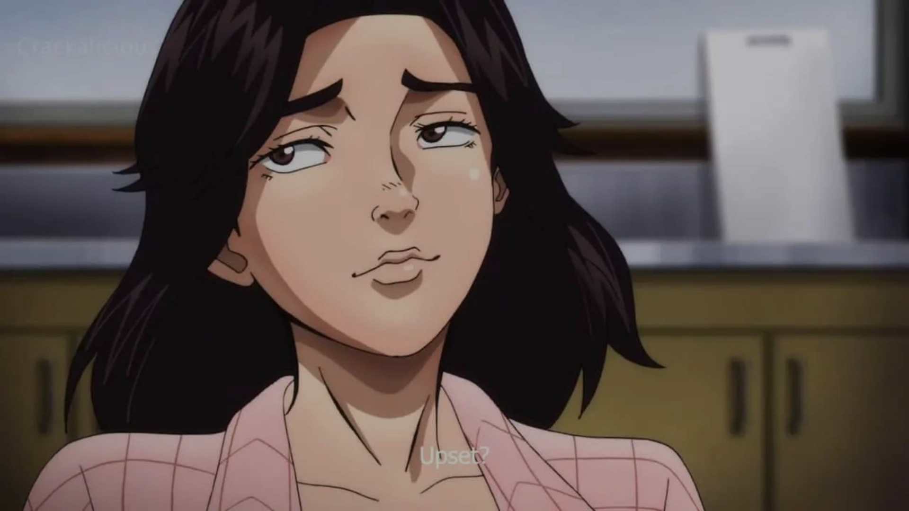
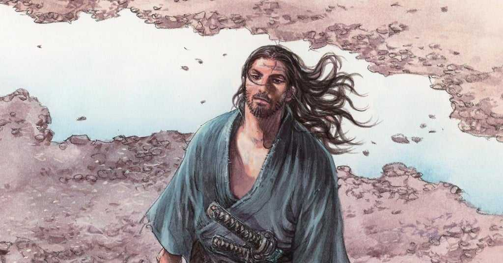
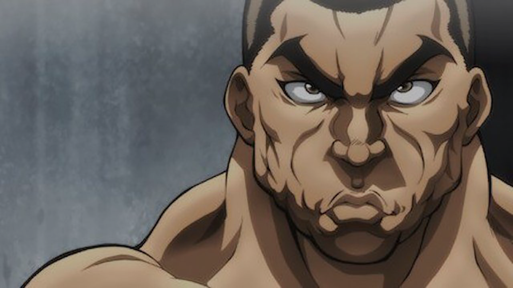
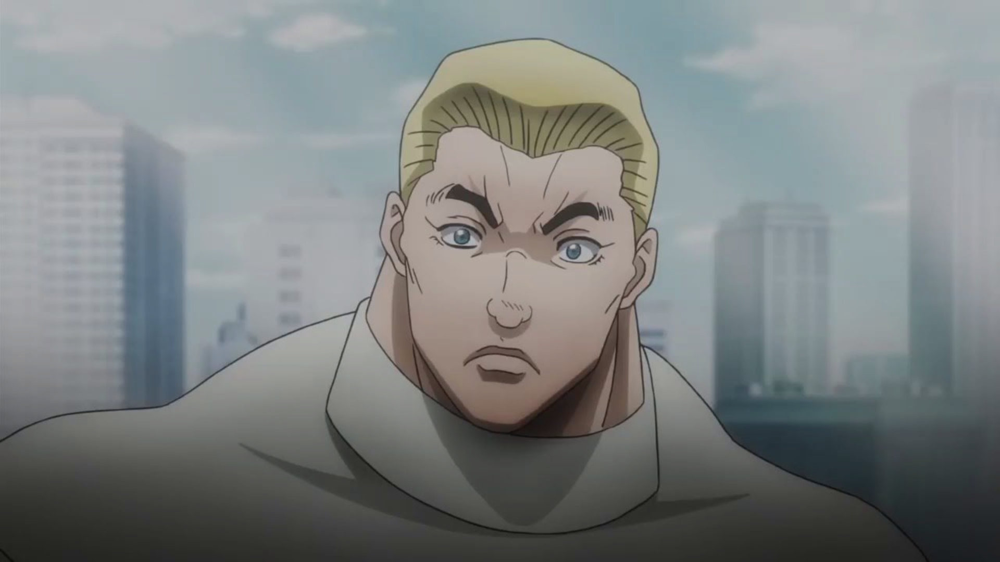
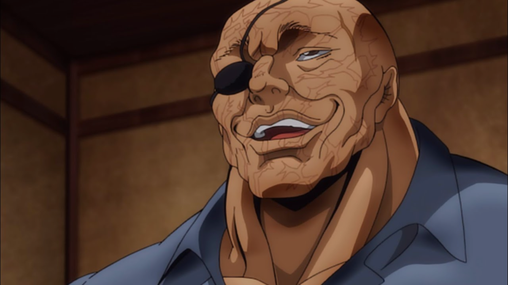
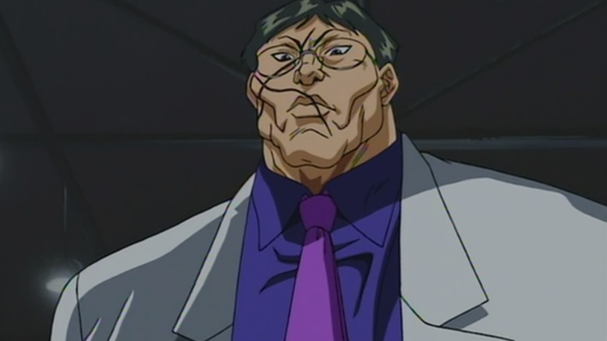
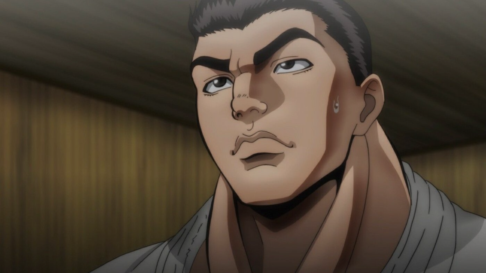
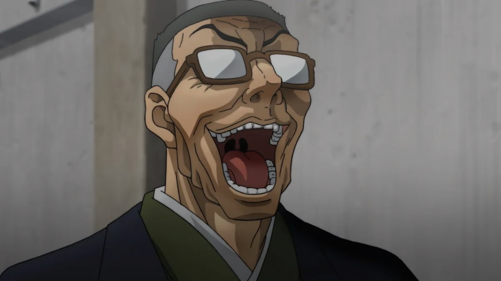
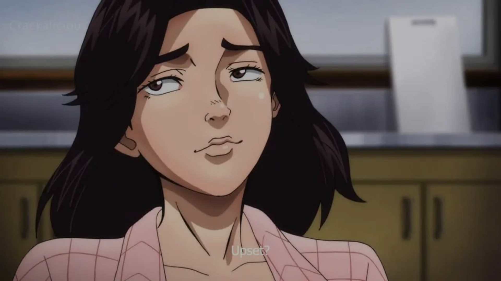
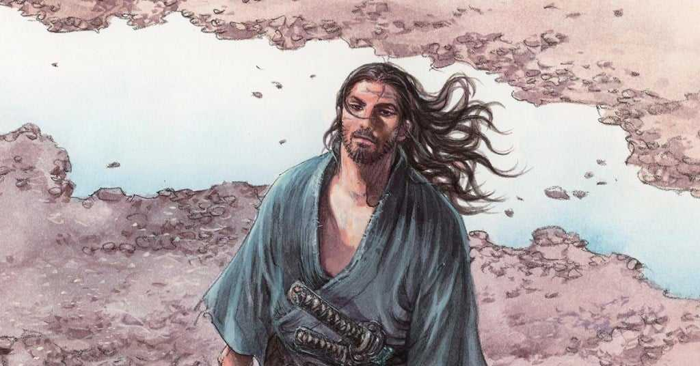
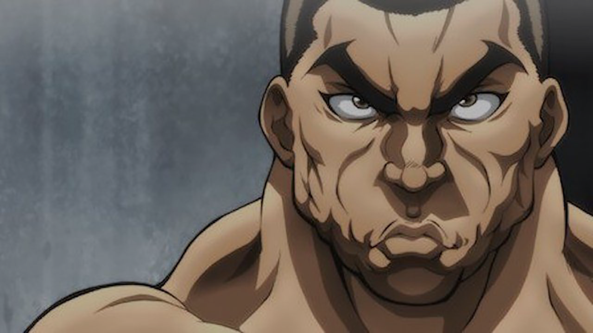
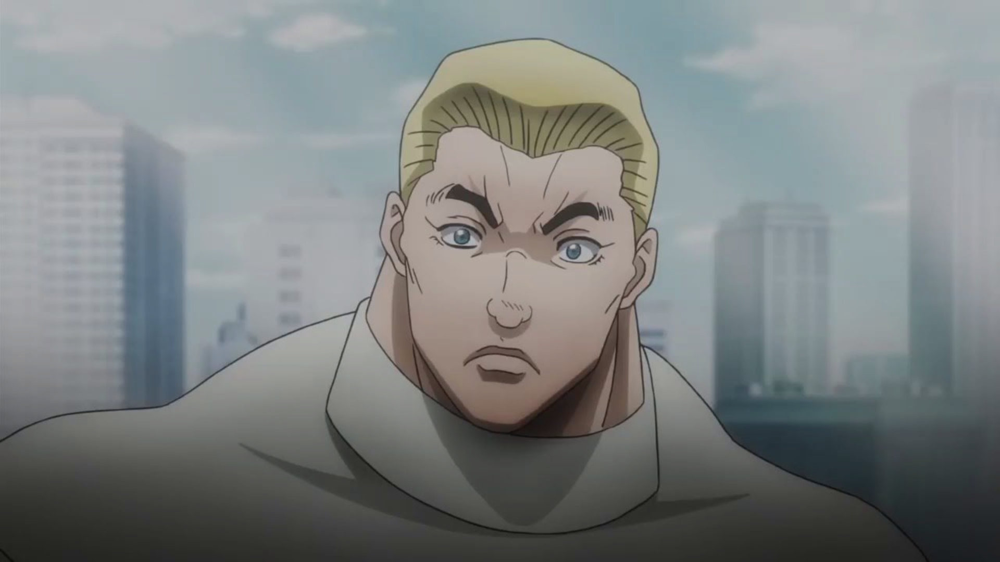